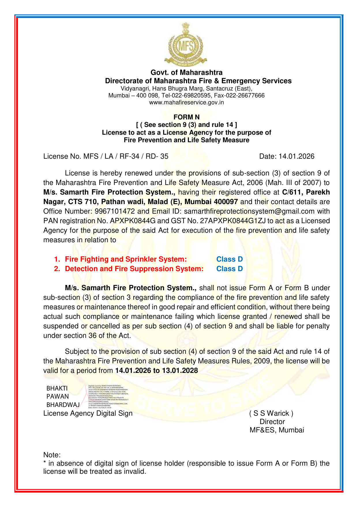

Technical guide · 01
Form B Fire Safety Certificate in Maharashtra: A Building Owner’s Guide
Understand Form B fire safety certification in Maharashtra, how it differs from Form A and a Fire NOC, what to prepare, and where to check current Directorate guidance.
Read guide →